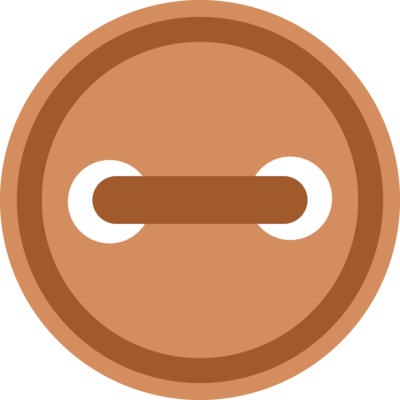

February 3, 2003
Dustin,
Why do I always want to help those who
refuse to help themselves? I have known you from such
a young age... we practically grew up together. And to
see you in the predicament you’ve created for yourself
is not an easy thing for me. I want you to understand it’s
not just you you’re hurting. You’re hurting your mother...
you’re hurting your grandmother, your brother, you’re
hurting me... and worst of all, you’re hurting Lilli, and
you don’t even realize it. You tell me all the time how
much you love her, and how you’d do anything for her...
well wake up Dustin! She won’t be four years old
forever, and if you think you can pass off your
alcoholism when she starts to put two and two together,
you’re sadly mistaken.
When I am laying beside you, talking about random
things and trying to make sense of how such a
wonderful person can lead such a crooked life, my heart
breaks. You are such a loveable guy... you have the
biggest heart and the best intentions, yet you set
yourself up for failure time and time again. You have so
much going for you... a mother who loves you, and has
given you a million chances to start over and try again. I
know other people may see the things you do as “taking
advantage” of her... but I know your intentions aren’t
ever to pick up that bottle again. But you fail yourself,
you cheat yourself, and you essentially give up on
yourself every time you screw up, Dustin. You can be so
much more. You can have so much more.
Last night when I left your house and you asked if I
was going to call you today, you have no idea how hard
it was to shake my head and say no. My heart was
telling me to say yes, that I’d call and we’d play the
game yet again... but for some reason my brain finally
took over and told you I couldn’t do it anymore. I want
you to be better. I want to see the sober Dustin all of the
time.
I understand that you’ve got issues deeper than I
could ever comprehend. I understand that your father
doesn’t care about you and that he has basically
abandoned you since the moment you entered this world. I understand your anger towards him and
everything he has put you through. But you can no
longer use that as your excuse baby! You have to wake
up and start living for the people who love you and DO
care about you... and most importantly, you have to start
living for yourself.
I told you to call me when you got your shit together,
and I meant that. I will be here for you as long as I know
you are trying and that you’re willing to put forth an
effort. But refuse to watch you fade away due to an
addiction that I have seen you overpower before and
know you can again. I care about you Dustin. I care
about what happens and if you would just listen and try
to understand... I think you’d care a little more, too. I
hope to hear from you soon, and until then, I’ll be
thinking about you and praying that you’re headed in the
right direction... and I hope you know you can call me if
Dee
